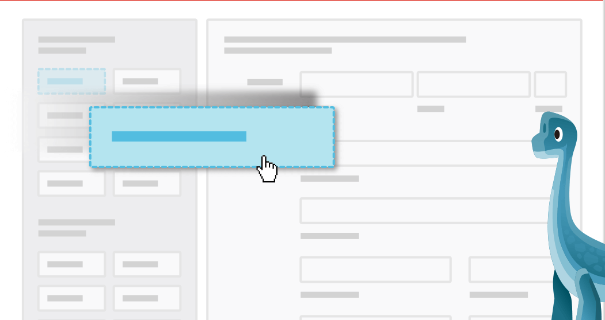

<!-- this is the entry point for selected card -->
<link rel="import" href="../../bower_components/polymer/polymer.html">
<link rel="import" href="../../bower_components/paper-icon-button/paper-icon-button.html">
<link rel="import" href="../../bower_components/paper-button/paper-button.html">
<link rel="import" href="../../bower_components/paper-tabs/paper-tabs.html">
<link rel="import" href="../../bower_components/iron-pages/iron-pages.html">
<link rel="import" href="../../styles/custom-styles.html">
<link rel="import" href="../../styles/share-styles.html">
<link rel="import" href="../core/cache.html">
<dom-module id="train-console">
    <style include="custom-styles"></style>
    <style include="share-styles"></style>
    <style>
    .console-container {
        bottom: 0px;
        left: 0px;
        right: 0px;
        position: fixed;
        border-top: solid 1px black;
        z-index: 9999;
        background: white;
        height: 200px;
        width: calc(100% - 40px);
        padding: 15px 20px;
    }

    .console-control {
        position: absolute;
        top: -35px;
        left: 0;
    }

    .open-true {}

    .open-false {
        bottom: -230px;
    }

    .show-demo-false {
        display: none;
    }

    .show-demo-true {
        background-color: rgba(0, 0, 0, 0.5);
    }

    .square_option {
        display: inline-flex;
        margin: 15px;
        height: 100px;
        width: 100px;
        background: #eee;
    }
    </style>
    <template>
        <template is="dom-if" if="{{show}}">
            <div class$="show-demo-{{demoForm}}">
                </img>
            </div>
            <div class$="console-container open-{{open}}">
                <div class="console-control">
                    <paper-icon-button icon="icons:expand-more" on-tap="_toggle" class="primary">Close</paper-icon-button>
                </div>
                <div>
                    <paper-tabs selected="{{selected}}" scrollable>
                        <paper-tab>Experience</paper-tab>
                        <paper-tab>Add new one</paper-tab>
                    </paper-tabs>
                    <iron-pages selected="{{selected}}">
                        <div>
                            <ul>
                                <li>Show smart form job_referral to anyone [edit]</li>
                                <li>Show overlay smart conversation pre_screen to anyone [edit]</li>
                                <li>Skip questions on smartconvo for level 4 and above [edit]</li>
                            </ul>
                        </div>
                        <div>
                            <div class="square_option" on-tap="_add_smart_form">SmartForm</div>
                            <div class="square_option" on-tap="_add_smart_convo">SmartConvo</div>
                            <div class="square_option">Overall Advice</div>
                            <div class="square_option">Input Advice</div>
                            <div class="square_option">Video/Audio narrative</div>
                        </div>
                    </iron-pages>
                </div>
            </div>
        </template>
    </template>
</dom-module>
<script>
(function() {
    'use strict';
    Polymer({
        is: 'train-console',
        behaviors: [
            Spinel.Base,
            Spinel.Cache
        ],
        listeners: {},
        properties: {
            show: {
                type: Boolean,
                notify: true,
                value: false
            },
            open: {
                type: Boolean,
                value: false
            },
            demoForm: {
                type: Boolean,
                value: false
            },
            message: {
                type: String,
                value: ''
            },
            selected: {
                type: Number,
                value: 0
            },
            ignore: {
                type: Boolean,
                value: false
            }
        },
        ready: function() {
            if (Spinel.getConfig('debugMode')) {
                PubSub.subscribe('debug_simulate', function(topic, data) {
                    if (data && data.event === "change_train_console") {
                        console.log(data);
                        this.show = data.payload;
                    }
                }.bind(this));
            }
        },
        _getShow: function() {
            return true;
        },
        _toggle: function() {
            this.open = !this.open;
        },
        _add_smart_form: function() {
            this.demoForm = true;
        },
        _demo: function() {
            this.demoForm = false;
        }
    });
})();
</script>